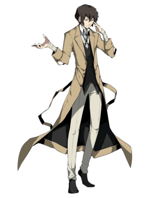

DAZAI OSAMU

Dazai Osamu es un miembro activo de la Agencia De Detectives y un ex ejecutivo de la Port Mafia
Dazai es un personaje que inicialmente parece tonto e inmaduro debido a sus bromas pesadas hacia el resto de sus compañeros y sus intentos de suicidio continuos, en la realidad es una persona bastante inteligente y seria que no dudara en hacerle daño a sus enemigos para conseguir sus objetivos
Su inteligencia es un aspecto que lo hace destacar sobre los demas, ya que es capaz de resolver grandes misterios en un corto periodo de tiempo, su inteligencia y capacidad de anilisis es tan buena que está casi a la par de Rampo Edogawa
Muchas partes de su pasado antes de la Agencia De Detectives son desconocidos, lo unico que se sabe hasta la fecha se ha dado en las novelas BSD: fifteen, BSD: Storm Bringer, BSD: Dazai Osamu y la era oscura.Fifteen fue adaptado al anime en los primeros capitulos de la temporada 3, mientras que Dazai Osamu y la era oscura fue adaptado al anime en los primeros capitulos de la temporada 2
HABILIDADES
Su habilidad es Ningen Shikkaku(indigno de ser humano). Esta habilidad le permite anular otras habilidades al tener contacto con está. Su habilidad siempre está activa por lo que puede anular aunque se vea restringida

RELACIONES
CHUUYA NAKAHARA
Chuuya Nakahara fue el compañero de Dazai en sus años como miembro de la Port Mafia.Se dice que trabajaban tan bien juntos que lograron derribar toda una organización en una noche, esto hizo que los comenzaran a llamar Soukoku (Doble Negro). A pesar de que ni en su primer encuentro se han llevado bien, Chuuya y Dazai han dependido del otro en muchas ocasiones, a tal punto que ambos conocen muchas partes del pasado del otro, como por ejemplo en Storm Bringer donde Dazai es una pieza importante para ayudar a Chuuya con su pasado.
AKUTAGAWA RYUNOSUKE
Akutagawa fue salvado de las calles para convertirse en el discipulo de Dazai desde que tenia 14 años,aun así, Dazai nunca reconocio su talento, lo entrenó hasta sus limites para que fuera más y más fuerte, siendo capaz de dañarlo gravemente si era necesario. Actualmente Dazai se muestra más orgulloso de las habilidades de Akutagawa y a su vez se ve algo arrepentido de sus acciones pasadas.
ODA SAKUNOSUKE
Odasaku fue uno de los mejores amigos que tuvo Dazai en su época como ejecutivo de la Port Mafia, cada noche Dazai, Odasaku y otro compañero de trabajo llamado Ango salian a beber al bar de Lupin;Dazai le tiene cariño a estos recuerdos a pesar de que lo que vino despues no fue tan bueno. Cuando Oda estaba dando sus ultimos respiros, este le dijo a Dazai que dejara la Port Mafia para etrar a la agencia de detectives; cosa que no tardó en cumplir